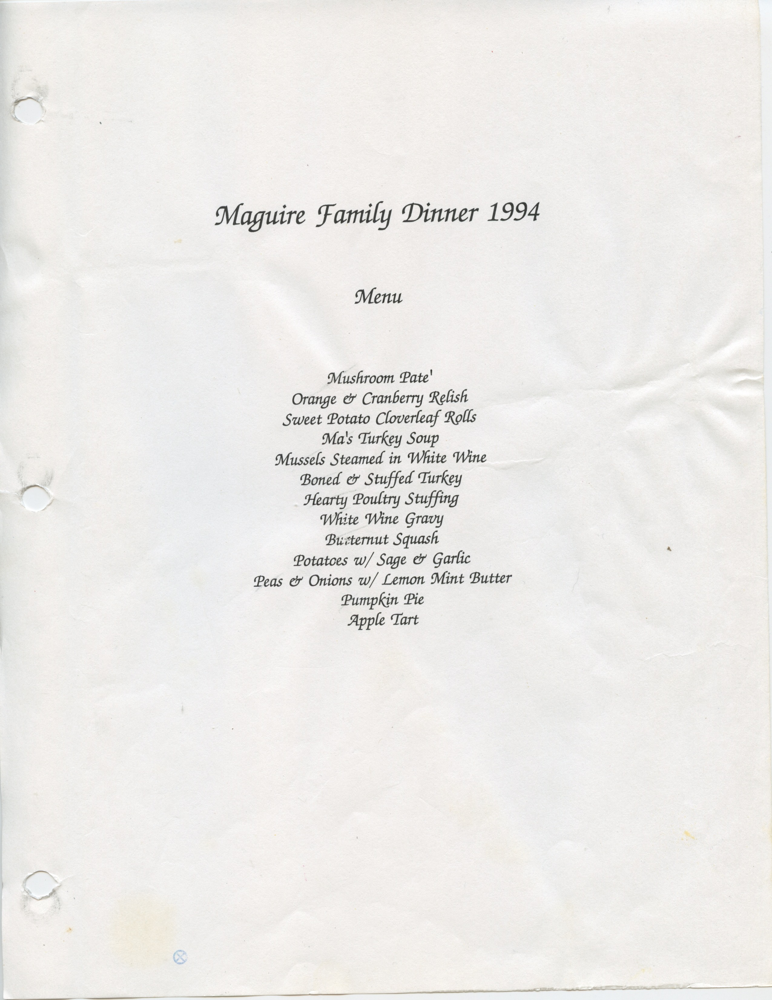

Learn Enough to Be Dangerous is a leader in the movement to teach technical sophistication, the seemingly magical ability to take command of your computer and get it to do your bidding. This includes everything from command lines and coding to guessing keyboard shortcuts, Googling error messages, and knowing when to just reboot the darn thing. We believe there are at least a billion people who can benefit from learning technical sophistication, probably more. To join our movement, sign up for our official email list now.
You should follow Michael on Twitter here.
Eventually this page will be an application that shows all the menus from the Maguire family Thanksgiving dinners, starting with the 1994 menu shown below.
